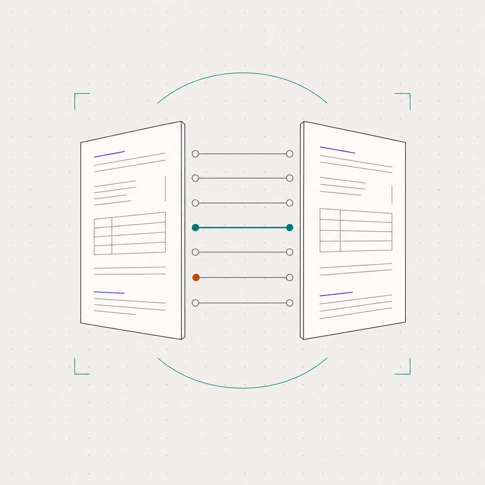
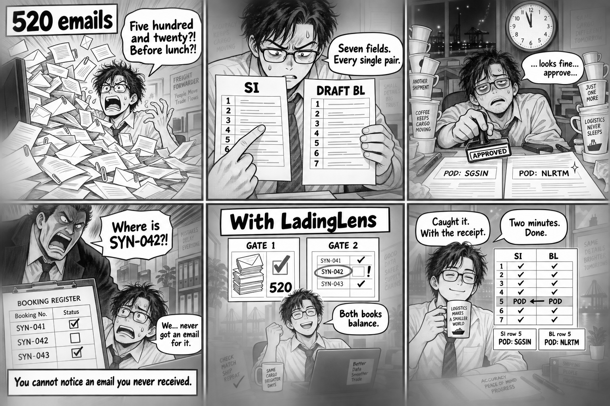
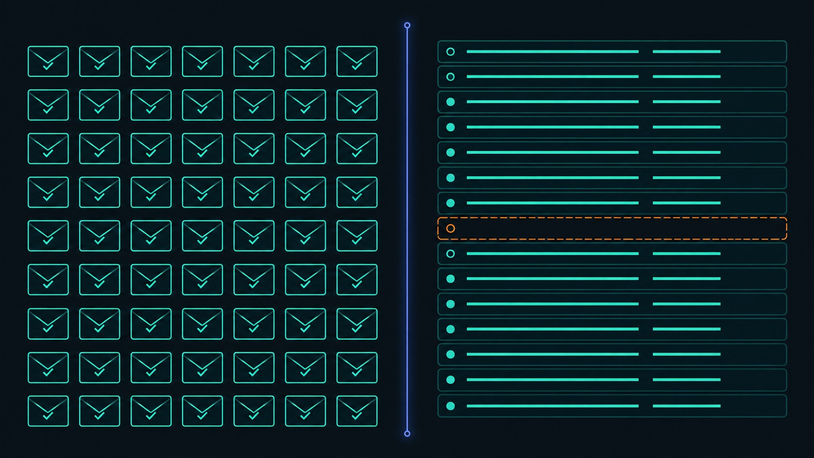
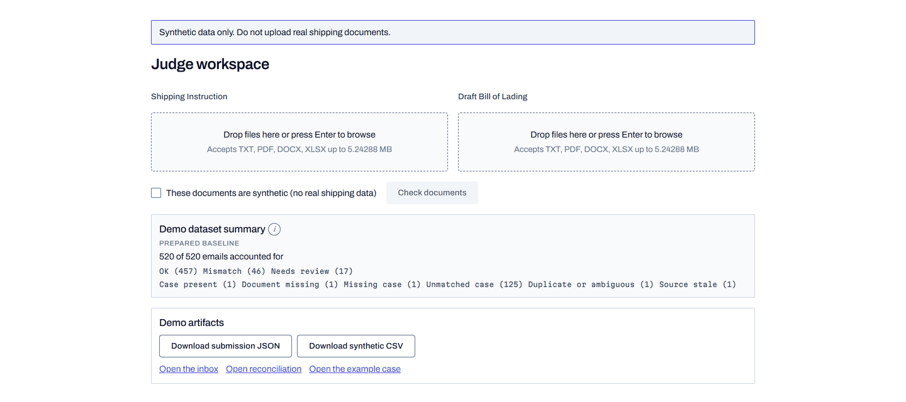
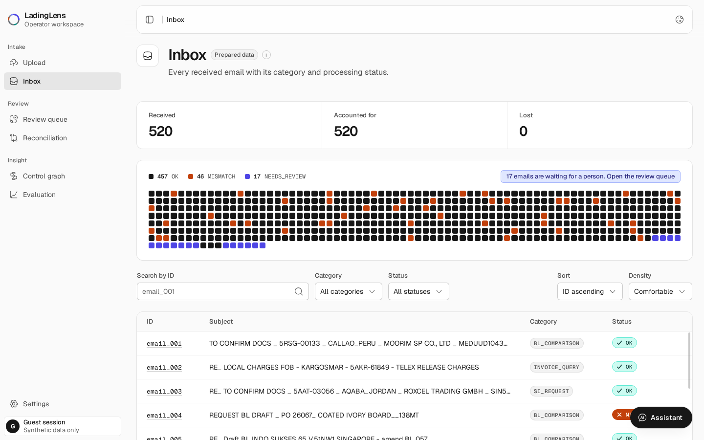
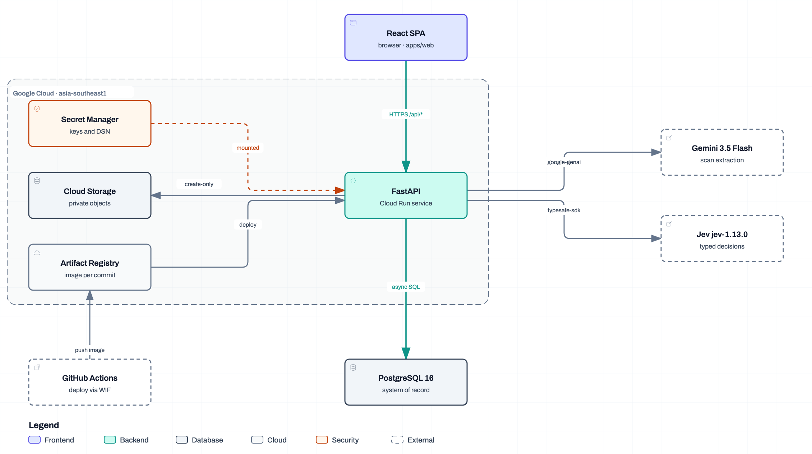

Every email accounted for. Every shipment answered for.
A bill of lading is the ship’s receipt for a container. We check every
draft against what the customer asked for, and catch the shipments nobody emailed about.
Two independent checks, not one sorting modelEvery verdict clicks back to its source lineRefuses rather than guesses
Team T010NG
@kymil4
Backend · Pipeline · Frontend
@AlaskanTuna
Fullstack · DevOps · Cloud
@chaosiris
Persistence · Deployment · Verification
@DrxgClanPC
Ideation · Pitch · Review

Aligned with UN Global Goals 8 and 9
averis-222536409832.asia-southeast1.run.app/judge
github.com/Averis-T010NG/LadingLens
Synthetic data only · no account required
LadingLens
The problem
02 / 13 · The volume
One request. Seven fields. Two of them are wrong.
Two thousand emails can land here in a day. This is one of them.
Email 065 · from the organisers’ bundleOne 40-foot container of paper. Port Klang → Ho Chi Minh City.
Where the goods are unloaded
SI Ho Chi Minh City, Vietnam (VNSGN) BLBusan, South Korea (VNSGN)
Who gets told on arrival
SI International Forest Products LLC BLHabras International Limited
Ports have short codes, like airports. VNSGN is Ho Chi Minh — printed beside
the word Busan. Either the city is wrong or the code is, and nothing here says which.
So it is flagged for a person, not signed.

What one miss can cost
MYR 200 amendment feeUp to MYR 5,000 customs fineDemurrage, or a rolled sailing
Volume from the Averis brief · fee and fine from Maersk Malaysia guidance, for an amendment inside five days of arrival

LadingLens
The blind spot
03 / 13 · What an inbox cannot see
Sort the inbox perfectly and one failure still walks straight through.
Classification is a complete answer to the wrong question. It can only ever account for what arrived.
What a classifier can see
Every message that arrived
Sorted, labelled, routed and counted
Every attachment it carried
Read, extracted and compared field by field
Every case it opened
Tracked through to a verdict and an owner
Every field it compared
Seven per pair, each one anchored back to a line
A perfect score on all three, and a container can still sail on paperwork
that nobody ever raised.
What it cannotYou cannot notice an email you never received.
No message
Nothing to misfile
No attachment
Nothing to misread
No case
Nothing at all to flag
A booking with no emailAn amendment never sentA document that never left the shipper
The only way to see an absence is to check the inbox against a
second, independent record of what should have arrived.
Therefore
One record of what arrivedOne record of what was expectedReconcile the two, every run
The gap between those two records is the entire product
LadingLens
The solution
04 / 13 · Double entry
Borrow the answer from double-entry bookkeeping.
Two independent books. Checked separately, then reconciled against each other — so neither can quietly cover for the other.
Gate 1 · what arrivedEvery email is accounted for
Receipted and hashed before anything else runs, then given exactly one of five categories by pinned jev-1.13.0.
The arithmetic that has to hold
520 received520 accounted for0 lost
Nothing is silently dropped. Every message ends on a recorded outcome, including the ones a person has to decide.
Gate 2 · what should have arrivedThe expected-shipment ledger
MISSING_CASE
On the ledger, no case exists
UNMATCHED
A case with no ledger entry
AMBIGUOUS
Both candidate sets kept
An independent ledger reconciled against the cases that exist — never derived from the inbox, which is the entire point.
SHP-5RFR-37631 expects a draft BL and has no case. Gate 1 could never raise it; there was no email to raise.
Why two
An inbox proves what cameA ledger proves what should haveOnly the pair proves absence
Two independent controls, one reconciliation
LadingLens
Evidence
05 / 13 · Provenance
Every verdict points back at the exact line it came from.
Seven fields, with the Shipping Instruction always the reference. No value enters a verdict without an anchor into its source.
The ruleNo anchor, no answer.
A provenance anchor is not a citation added afterwards. It is the condition on which a value is allowed to exist at all.
Reference
The Shipping Instruction, always
Compared
Against the draft Bill of Lading
A value that cannot be grounded fails the run rather than entering a verdict.
What an anchor is, by format
TXT
Line number, plus Unicode code-point start and end columns
XLSX
Sheet name, plus an exact A1 cell reference
DOCX
Table cell coordinates, or the paragraph index
PDF
Page, plus a 72-dpi bounding box when the PDF is digital
The seven compared fields
ShipperConsigneeNotify partyPort of loadingPort of dischargeContainer countGross weight
Chinese labels included — the columns are code-point exact, not byte offsets,
so a highlight lands on the character a reader can actually see.
One click
Open a verdictLand on the lineDownload the artifact
Seven fields · every one of them anchored, or refused
LadingLens
Decision ownership
06 / 13 · Who decides
The question is not what AI can read. It is who is allowed to decide.
Four decisions, four owners, stated up front — and two rules that hold when a provider lets us down.
The register
Reads documents
Gemini 3.5 Flash, grounded to anchors — scanned and ambiguous documents only
Judges meaning
Pinned jev-1.13.0 — category, document role, field equivalence, typed answers only
Computes
Deterministic code — parsing, normalisation, numbers, schema, state transitions
Decides
A named human — anything consequential or unsafe to automate
Rule oneFail closed
A timeout, an exhausted quota, an invalid typed answer, or a value that cannot be grounded is recorded as a failure — never as a result.
Rule twoNever fabricate
No fallback provider, no guessed category. A case with no answer shows as needing review, with a retry.
Twenty of 520 cases are refused rather than guessed. That count is the design working.
Register
docs/ai.md carries every decision and its ownerGemini 3.5 Flashjev-1.13.0, pinned
Automatic where the evidence is sufficient, human-owned where it is not
LadingLens
The demo
07 / 13 · Try it yourself
A public path. No account. Live against the real providers.
Nothing here needs a credential, a fixture or a rehearsal — the link stays open for the whole judging window.
The workspace at /judge

Five steps, about four minutes
01 Open the link
A guest session mints itself — no sign-in, no email
02 Drop a pair
Any shipping instruction and draft BL that you bring
03 Watch it run
Real providers, in real time — never a fixture
04 Read the verdicts
Click any of the seven through to its source line
05 Take the artifacts
Download the run, hit Reset All, and then do the whole thing over again
On provider failure the upload stays retryable, and any prepared example
appears only under a PREPARED FALLBACK label.
Open path
No accountNo allow-listSynthetic data onlyReset between runs
Reachable without sign-in throughout the judging window
LadingLens
Watch it run
08 / 13 · Demo
Five minutes, end to end, against the deployed service.
Not a mock-up and not a rehearsal — the recording is the deployed Cloud Run service, captured in one pass.

Drops in as assets/demo.mp4 · press V, or choose a local file
05:00 max · 1920 × 1080
What the recording covers
Guest entry
No account, no allow-list
Both gates
520 accounted for, then SHP-5RFR-37631 surfacing
Your own pair
A live run at /judge, verdict clicked to source
Or skip it and run it yourself
…run.app/judge
Tracked in issue #46 Not yet recorded at time of writing
Captured on
The deployed Cloud Run serviceSynthetic bundleNo staged screens
Press V on this slide to start the player
LadingLens
The run
09 / 13 · All 520
Every message carries an outcome on the record.
Five hundred and twenty messages in, five hundred and twenty accounted for. This is where each one of them landed.
All 520, by outcome
454OK 87.3%
46Mismatch 8.8%
20Needs review 3.8%
520Accounted for 0 lost
Nothing dropped
Every inbound message ends in a state a person can name out loud
Nothing invented
No gap is filled with a plausible guess to keep a number tidy
The 46
A field differs between the two documents — flagged with both values and both anchors
The 20
The evidence was not sufficient to decide, so nobody pretended that it was
Four hundred and fifty-four clean, forty-six flagged, twenty refused.
That refusal count is the design working, not a shortfall in it.
How the count is reached
Gate 1 · Completeness
520 received, 520 accounted for, 0 lost
Gate 2 · Reconciliation
SHP-5RFR-37631 expects a draft BL and has no case at all — MISSING_CASE, structurally invisible to the inbox
Held for a person
Unreadable draft BL, blank customer fields, wrong document type — handed on by name, never guessed
By design
The refusal rate is published beside the pass rate, never folded into it
Gate 2 is the only check that can find SHP-5RFR-37631. No amount of accuracy on Gate 1 would ever have surfaced it.
Baseline
Organisers’ synthetic bundlePrepared seed, labelled as preparedRe-runnable from the repository
Prepared seed baseline from the organisers’ synthetic bundle
LadingLens
Technical
10 / 13 · Architecture
One Cloud Run service. No long-lived credentials.
The whole system · the same diagram the README carries

Every deploy must pass
HealthReadiness on a real DBSPA fallbackUnauthenticated /judge520-record artifactPrivate-object denial
Keyless CI through Workload Identity Federation — no service-account key exists anywhere · docs/cloud.md · docs/readme/architecture.json
LadingLens
Claims boundary
11 / 13 · What is not true yet
The measured numbers — including the one we missed.
A demo that hides its worst number is worth less than one that names it. Everything below is checkable in the repository.
The miss
25.6slive-path p95 against a 10 s target
Three warm-ups then twenty measured trials on one scanned pair. Only 5 of 20 completed.
No latency claim is made beyond what the retained artifact shows. Run 35579538701 · commit 4eb1401
Scope of the preliminary build
Synthetic only
DATA_POLICY=synthetic-only, enforced server-side
Guest entry
Sign-in fields are presentational, never sent or stored
Prepared baseline
The inbox is seeded, and labelled as prepared
Live path
Only /judge uploads run the real providers
A provider failure fails closed with a plain message and a labelled PREPARED FALLBACK — never a fabricated result.
Sources
docs/ai.mdRetained benchmark artifactNothing cited that is not measured
Claims boundary stated before anyone has to ask for it
LadingLens
Roadmap
12 / 13 · What comes next
Close the loop, then earn the right to real data.
Ordered by what unblocks the next honest claim, not by what demonstrates best.
Near · in flight nowMake the live path fast enough
Concurrent per-document calls and a warmer extraction path, measured in exactly the same way, until p95 sits under the target rather than beside it.
Concurrency
Per-document calls issued together instead of in series
Warm start
The extraction path kept warm between runs
Same method
Three warm-ups, twenty measured trials, one artifact retained — so the next figure is comparable to this one
Until that number moves, the 25.6 s on the previous slide is the only
latency figure we will quote.
After that, in order
Reconcile the real ledger
Swap the synthetic expected-shipment CSV for the operational source, so Gate 2 reports on live bookings instead of on a fixture
Earn real documents
Retention, access, transfer and provider controls approved before a single production document is processed
Operational feedGate 2 on live bookingsSigned off, not merely convenient
Each step unblocks the claim after it. None of the three is skippable.
Not yet
Real customer documentsA published latency claimAnything a person has not signed off
Each step unblocks the claim after it
Thank you
Inspect it yourself
13 / 13
Do not take our word for any of it.
The point of all of it is a freight desk that works by exception, not by volume. Two links — one runs the system against a pair we have never seen, the other is every line that makes it work.
What to do with them
Bring your own pair
Upload a shipping instruction and draft BL we have never seen
Audit a verdict
Click any one of the seven through to the exact line it came from
Check our arithmetic
Download the artifact, reset the workspace, and run it again
Everything claimed in this deck is either on screen at one of those two links, or it is not claimed.
With regards,
— Team T010NG
Scan either one
Live · /judge…run.app/judgeGitHubAveris-T010NG/LadingLens
Both links stay up for the whole judging window, and neither asks for an account.
Submission
Averis × Monash Hackathon 2026Preliminary roundSynthetic data only